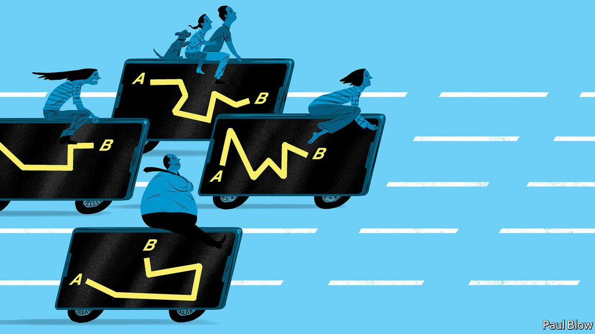
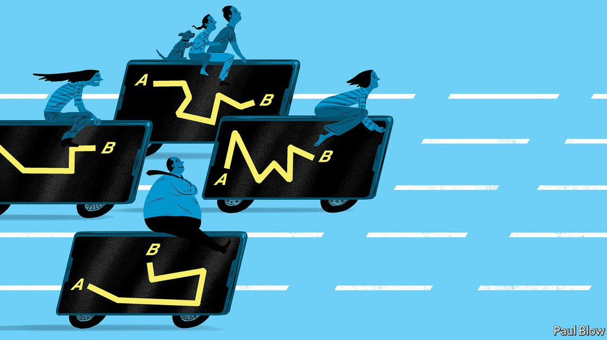
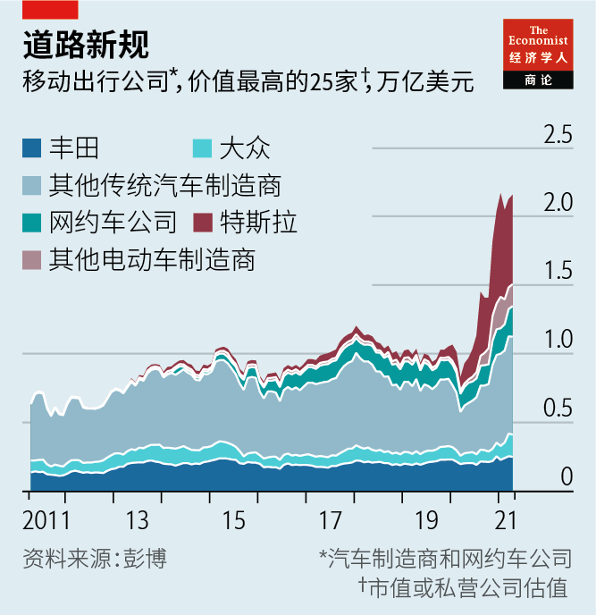

2021-04-25T13:16:26+00:00
Personal transport
个人交通
個人交通
New means of getting from A to B are disrupting carmaking
新出行方式颠覆汽车制造业
新出行方式顛覆汽車製造業
The business of “mobility” in its many forms is huge, and legacy metal-bashers are racing to adapt
“移动出行”形式多样、市场庞大，老牌车厂奋起顺应
“移動出行”形式多樣、市場龐大，老牌車廠奮起順應
 
IN THE DECADES after the second world war carmakers were the undisputed champions of the personal-transport economy. Competition and economies of scale made cars affordable to millions of motorists in industrialised countries. In the 1980s and 1990s the likes of General Motors (GM) and Toyota boasted some of the world’s richest market capitalisations. When it came to getting around town, nothing beat the automobile.
二战后的数十年里，汽车制造商是个人交通经济毋庸置疑的大赢家。市场竞争加上规模经济让工业化国家数以百万计的驾驶者都能买得起车。上世纪八九十年代，通用汽车和丰田等公司都曾得意地跻身全球市值最高公司之列。要在城市里行动，没什么比得上汽车。
二戰後的數十年里，汽車製造商是個人交通經濟毋庸置疑的大贏家。市場競爭加上規模經濟讓工業化國家數以百萬計的駕駛者都能買得起車。上世紀八九十年代，通用汽車和豐田等公司都曾得意地躋身全球市值最高公司之列。要在城市裡行動，沒什麼比得上汽車。
Today the picture looks different. Of the five most valuable firms in the moving-people-around business only two, Toyota of Japan and Volkswagen of Germany, are established carmakers. Ahead of everyone by a country mile is Tesla, an American company that has disrupted the car industry by turning electric vehicles from an unsightly curiosity (remember the G-wiz?) into a serious challenger to the internal combustion engine. Rounding off the top five are not carmakers at all but Uber, an American ride-hailing giant worth over $100bn, and Didi Chuxing, a Chinese one that on April 10th was reported to have filed confidentially to go public in New York and hopes for a similar valuation.
今天的景象已然不同。个人交通领域里市值最高的五家公司中只有日本丰田和德国大众是传统车企。遥遥领先的是特斯拉，这家美国公司把电动汽车从古怪难看的东西（还记得G-wiz吗？）变成了能真正挑战内燃机的出行工具，颠覆了整个汽车产业。前五大公司中其余的两家甚至根本不是汽车制造商，而是网约车公司——市值过千亿美元的美国巨头优步和中国公司滴滴出行。4月10日有报道称滴滴已经秘密提交了在纽约上市的文件，希望估值与优步看齐。
今天的景象已然不同。個人交通領域裡市值最高的五家公司中只有日本豐田和德國大眾是傳統車企。遙遙領先的是特斯拉，這家美國公司把電動汽車從古怪難看的東西（還記得G-wiz嗎？）變成了能真正挑戰內燃機的出行工具，顛覆了整個汽車產業。前五大公司中其餘的兩家甚至根本不是汽車製造商，而是網約車公司——市值過千億美元的美國巨頭優步和中國公司滴滴出行。4月10日有報道稱滴滴已經秘密提交了在紐約上市的文件，希望估值與優步看齊。
After being slow to react to the threat from Tesla, legacy carmakers are—just about—getting to grips with electrification. Now another disruption lurks around the corner. Changing habits and technology are forcing car companies to rethink how their products are sold, used and owned. In a sign of the times, the boss of Volkswagen, Herbert Diess, concedes that “ownership is not necessarily what you want. You want a car when you need a car.” Competitors are elbowing in; Didi is expected to be the star turn at the Shanghai Motor Show later this month. The private car is not obsolete. But the future business of “mobility”—as the industry has rebranded getting from A to B—will involve much more besides.
在对特斯拉带来的威胁做出迟缓的反应后，老牌车厂刚刚要开始顺应电气化的趋势。现在另一场颠覆又悄然逼近。习惯的改变和技术的进步迫使车厂重新思考产品的销售、使用和拥有方式。大众汽车的老板赫伯特·迪斯（Herbert Diess）的话成为了时代的注脚：“人们不一定想拥有汽车了，只是在需要用车的时候才想有车。”竞争对手纷纷涌入：在本月下旬举行的上海车展上，滴滴预计将会是一大主角。私家车并没有完全过时，但所谓的“移动出行”（汽车行业对于从一地到另一地的新称法）的内涵将会丰富得多。
在對特斯拉帶來的威脅做出遲緩的反應後，老牌車廠剛剛要開始順應電氣化的趨勢。現在另一場顛覆又悄然逼近。習慣的改變和技術的進步迫使車廠重新思考產品的銷售、使用和擁有方式。大眾汽車的老闆赫伯特·迪斯（Herbert Diess）的話成為了時代的註腳：“人們不一定想擁有汽車了，只是在需要用車的時候才想有車。”競爭對手紛紛湧入：在本月下旬舉行的上海車展上，滴滴預計將會是一大主角。私家車並沒有完全過時，但所謂的“移動出行”（汽車行業對於從一地到另一地的新稱法）的內涵將會豐富得多。
The market could be enormous. In 2019, ahead of its flotation, Uber put it at $5.7trn, based on the 20trn or so kilometres that passengers travel each year in 175 countries using road vehicles, including public transport. Consultancies’ estimates are more subdued, and vary considerably. But all point to rich potential. IHS Markit reckons that what it calls “new transport” will be worth $400bn in revenues by 2030. KPMG puts the figure at $1trn. Accenture calculates that revenues from mobility, including car sales, will hit $6.6trn by 2050; new transport will make up 40% of the total.
这个市场可能规模巨大。2019年，优步在上市前估计其规模将在5.7万亿美元，其依据是175个国家每年包括公共交通在内的道路车辆出行里程约为20万亿公里。各家咨询公司的估算更为保守，而且差异很大。但所有估算都显示出这一市场潜力深厚。IHS Markit估计，到2030年，它称之为“新交通”的领域将有4000亿美元的收入。毕马威估计的数字是一万亿美元。而埃森哲计算，到2050年，包括汽车销售在内的移动出行市场收入将达到6.6万亿美元，新交通将占其中的40%。
這個市場可能規模巨大。2019年，優步在上市前估計其規模將在5.7萬億美元，其依據是175個國家每年包括公共交通在內的道路車輛出行里程約為20萬億公里。各家諮詢公司的估算更為保守，而且差異很大。但所有估算都顯示出這一市場潛力深厚。IHS Markit估計，到2030年，它稱之為“新交通”的領域將有4000億美元的收入。畢馬威估計的數字是一萬億美元。而埃森哲計算，到2050年，包括汽車銷售在內的移動出行市場收入將達到6.6萬億美元，新交通將佔其中的40%。
Individually owned cars will remain a big part of the new ecosystem. They are still the world’s preferred means of transport. For every ten miles travelled Americans use the car for eight, Europeans for seven and Chinese for six. Even in Europe, which is friendlier to public transport than America or China, only one in six miles was travelled on buses, trains and coaches in 2017. Uber accounts for just 1.5% of total miles driven in its home market.
私家车仍将是这一新生态系统的一大组成部分。它们仍然是全球大众首选的交通工具。在美国，私家车出行里程占总里程的八成，欧洲为七成，中国为六成。即使在公共交通比美国或中国发达的欧洲，2017年人们乘坐公共汽车、火车和长途汽车出行的里程也仅占总里程的六分之一。优步在美国市场仅占车辆出行里程的1.5%。
私家車仍將是這一新生態系統的一大組成部分。它們仍然是全球大眾首選的交通工具。在美國，私家車出行里程佔總里程的八成，歐洲為七成，中國為六成。即使在公共交通比美國或中國發達的歐洲，2017年人們乘坐公共汽車、火車和長途汽車出行的里程也僅佔總里程的六分之一。優步在美國市場僅占車輛出行里程的1.5%。
The pandemic has in some ways cemented the car’s pole position. Many people have shunned shared vehicles, be they cabs or buses, for fear of infection. A survey of American travel habits by LEK, a consultancy, showed that car journeys declined by just 9% last year, compared with 55-65% for public transport and ride-hailing. Although today’s teenagers are less interested in getting behind the wheel than their parents were, that changes when they turn 20. Between 2010 and 2018 America lost 800,000 drivers under 19 but gained 1.8m aged 20-29, estimates Bernstein, a broker. Zeal for cars in China, the biggest market, remains strong. In the first three months of the year Chinese car sales rebounded close to their pre-pandemic peak.
新冠疫情在一定程度上巩固了私家车的领先地位。许多人因担心感染病毒而避开出租车、公交车这类与他人共乘的车辆。咨询公司艾意凯（LEK）对美国人出行习惯的调查显示，去年私家车出行量仅下降了9%，而公共交通和网约车下降了55%至65%。虽然如今的青少年不像他们父母当年那样喜欢开车，但等他们满20岁后情况就会改变。据券商盛博估计，2010年至2018年间，美国19岁以下的驾驶者减少了80万，而20岁至29岁的驾驶者增加了180万。在中国这个最大的市场，人们对汽车的热情不减。今年第一季度，中国汽车销量已回升至接近疫情前峰值。
新冠疫情在一定程度上鞏固了私家車的領先地位。許多人因擔心感染病毒而避開出租車、公交車這類與他人共乘的車輛。諮詢公司艾意凱（LEK）對美國人出行習慣的調查顯示，去年私家車出行量僅下降了9%，而公共交通和網約車下降了55%至65%。雖然如今的青少年不像他們父母當年那樣喜歡開車，但等他們滿20歲後情況就會改變。據券商盛博估計，2010年至2018年間，美國19歲以下的駕駛者減少了80萬，而20歲至29歲的駕駛者增加了180萬。在中國這個最大的市場，人們對汽車的熱情不減。今年第一季度，中國汽車銷量已回升至接近疫情前峰值。
The automobile’s appeal endures on the outskirts of cities and beyond. Most driving takes place away from congested urban cores, Bernstein reckons. Nearly 90% of car miles in America are driven in the suburbs, small towns and rural locations, where a private car is often the only choice.
在城郊以及更偏远的地方，私家车的吸引力依然如故。盛博认为，大多数驾车里程发生在拥堵的市中心之外。在美国，近90%的汽车行驶里程是在郊区、小镇和乡村地区完成的，在这些地方私家车往往是唯一的出行工具。
在城郊以及更偏遠的地方，私家車的吸引力依然如故。盛博認為，大多數駕車裡程發生在擁堵的市中心之外。在美國，近90%的汽車行駛里程是在郊區、小鎮和鄉村地區完成的，在這些地方私家車往往是唯一的出行工具。
Instead it is in the city centres where a revolution beckons. There the classic ownership model is endangered, new modes of transport are emerging and competition is building from upstart mobility providers that connect customers with a mesh of different services.
倒是在城市中心，一场革命正在降临。在这里，传统的汽车拥有模式危在旦夕，新的出行方式正在浮现，新兴移动出行服务商将客户接入一系列不同服务，竞争正在增强。
倒是在城市中心，一場革命正在降臨。在這裡，傳統的汽車擁有模式危在旦夕，新的出行方式正在浮現，新興移動出行服務商將客戶接入一系列不同服務，競爭正在增強。
Didi, Uber and others enable rides on demand. Having lost money for years, Uber and Lyft, its smaller American rival, should become profitable in 2022, thinks Morgan Stanley, an investment bank. On April 12th Uber reported record monthly gross bookings (including food delivery). Companies like Zipcar let people rent cars by the hour, or even minute. Turo, a Californian firm, is one of several to offer longer-term peer-to-peer car-sharing. BlaBlaCar, a French one that has signed up 90m drivers in 22 countries, connects those with spare seats to travellers headed in the same direction. Bike-sharing schemes jostle in new dedicated lanes with electric scooters for hire. Before the pandemic consultants at McKinsey reckoned that renting e-scooters might generate revenues of $500bn worldwide by 2030. Even flying taxis may at last be about to take off; some of their developers, such as Joby, have earned multibillion-dollar valuations.
滴滴和优步等出行服务商使按需用车成为可能。投行摩根士丹利认为，在多年亏损后，优步和它较小的美国对手Lyft应该能在2022年实现盈利。4月12日，优步公布取得创纪录的月度总预订量（包含送餐业务）。Zipcar等公司提供按小时甚至按分钟计费的租车服务。加州公司Turo是提供较长期P2P共享租车服务的几家公司之一。法国公司BlaBlaCar把车上有空位的司机和顺路的出行者匹配起来，已经在22个国家有了9000万名注册司机。在新的非机动车专用道上，共享自行车与出租电动滑板车你追我赶。疫情前，麦肯锡的顾问估计，到2030年，电动滑板车出租业务在全球可能带来5000亿美元的收入。就连“飞的”也可能终于要起飞了：Joby等一些“飞的”开发商已取得数十亿美元的估值。
滴滴和優步等出行服務商使按需用車成為可能。投行摩根士丹利認為，在多年虧損後，優步和它較小的美國對手Lyft應該能在2022年實現盈利。4月12日，優步公布取得創紀錄的月度總預訂量（包含送餐業務）。Zipcar等公司提供按小時甚至按分鐘計費的租車服務。加州公司Turo是提供較長期P2P共享租車服務的幾家公司之一。法國公司BlaBlaCar把車上有空位的司機和順路的出行者匹配起來，已經在22個國家有了9000萬名註冊司機。在新的非機動車專用道上，共享自行車與出租電動滑板車你追我趕。疫情前，麥肯錫的顧問估計，到2030年，電動滑板車出租業務在全球可能帶來5000億美元的收入。就連“飛的”也可能終於要起飛了：Joby等一些“飛的”開發商已取得數十億美元的估值。
All interchange
全面换乘
全面換乘
These various modes of transport are being stitched together into seamless trips by specialist journey-planning apps. They let travellers take a scooter to the underground station, take the metro, then jump in an Uber for the last mile—or pick whatever other combination of price and travel time is most suitable. They charge the individual service providers a commission for including them in a journey. Some are experimenting with subscription plans.
现在，专门的行程规划应用正将这些不同的出行方式无缝拼接起来。它们指引出行者骑滑板车到地铁站换乘地铁，再用优步打车完成最后一英里行程，或根据费用及耗时从其他组合中选择最优方案。这些应用向被纳入行程的出行服务商收取佣金。还有一些正在试验用户订阅模式。
現在，專門的行程規劃應用正將這些不同的出行方式無縫拼接起來。它們指引出行者騎滑板車到地鐵站換乘地鐵，再用優步打車完成最後一英里行程，或根據費用及耗時從其他組合中選擇最優方案。這些應用向被納入行程的出行服務商收取傭金。還有一些正在試驗用戶訂閱模式。
Some makers of aggregator apps are startups. Whim of Finland gives access to public transport, taxis, bikes and cars for a single subscription in several European locations. Others are stalwarts of the transport business. Deutsche Bahn, Germany’s state-owned railway company, has an app that also lets passengers use a variety of travel options. Frost & Sullivan, a consultancy, forecasts that such aggregators will generate revenues of $35bn with a decade.
有些聚合应用出自创业公司。芬兰的Whim在欧洲一些地方推出了一站式订阅模式，订户可在行程中用到公共交通、出租车、自行车和汽车等各类方式。有些应用出自交通行业的老牌企业。德国国有铁路公司德国联邦铁路（Deutsche Bahn）的一款应用也让乘客能够混合使用各种出行方式。弗若斯特沙利文咨询公司（Frost & Sullivan）预测，这类聚合服务商将在10年内创造350亿美元的收入。
有些聚合應用出自創業公司。芬蘭的Whim在歐洲一些地方推出了一站式訂閱模式，訂戶可在行程中用到公共交通、出租車、自行車和汽車等各類方式。有些應用出自交通行業的老牌企業。德國國有鐵路公司德國聯邦鐵路（Deutsche Bahn）的一款應用也讓乘客能夠混合使用各種出行方式。弗若斯特沙利文諮詢公司（Frost & Sullivan）預測，這類聚合服務商將在10年內創造350億美元的收入。
Small wonder carmakers want in. Many have done so by investing in the newcomers. In 2016 GM ploughed $500m into Lyft and Volkswagen put $300m in Gett, a European taxi-hailing app. Toyota has invested in Uber, Didi and Grab, a Singaporean ride-hailing company that is going public in a reverse merger valuing it at $40bn. GM has since sold its stake (at a healthy profit) but Toyota and Volkswagen have held on to theirs.
难怪汽车制造商也想分一杯羹。许多公司采取的方法是投资新的出行服务商。2016年，通用汽车向Lyft投资五亿美元，大众汽车向欧洲网约车应用Gett投资三亿美元。丰田投资了优步、滴滴和Grab（这家新加坡网约车公司将以反向合并的方式上市，估值400亿美元）。通用汽车后来又出售了在Lyft的股份（获利不菲），丰田和大众汽车则一直持有这些股份。
難怪汽車製造商也想分一杯羹。許多公司採取的方法是投資新的出行服務商。2016年，通用汽車向Lyft投資五億美元，大眾汽車向歐洲網約車應用Gett投資三億美元。豐田投資了優步、滴滴和Grab（這家新加坡網約車公司將以反向合并的方式上市，估值400億美元）。通用汽車後來又出售了在Lyft的股份（獲利不菲），豐田和大眾汽車則一直持有這些股份。
The car firms have also been competing with the challengers head on. It helps that many are already familiar with the principle of charging for use rather than ownership. In Britain more than 90% of cars use some form of financing. Arrangements where the customer pays a monthly sum over two to four years to offset depreciation are a lot like a long-term rental. It is not a huge leap from that to a subscription service. Hakan Samuelsson, boss of Volvo, thinks the shift from ownership to “usership” could be rapid.
这些车厂也一直在与挑战者正面竞争。还好许多车厂已经熟悉了不再买车而是按使用付费的原则。在英国，超过90%的汽车涉及某种形式的融资。客户在两到四年内支付月费抵消汽车折旧的做法就很像长期租赁，从这种方式转为订阅服务不算什么大飞跃。沃尔沃的老板哈坎·萨缪尔森（Hakan Samuelsson）认为，从有车到“用车”的转变可能很快就会完成。
這些車廠也一直在與挑戰者正面競爭。還好許多車廠已經熟悉了不再買車而是按使用付費的原則。在英國，超過90%的汽車涉及某種形式的融資。客戶在兩到四年內支付月費抵消汽車折舊的做法就很像長期租賃，從這種方式轉為訂閱服務不算什麼大飛躍。沃爾沃的老闆哈坎·薩繆爾森（Hakan Samuelsson）認為，從有車到“用車”的轉變可能很快就會完成。
Five years ago, in a bid to convince investors it was a “mobility” firm, not an irrelevant behemoth, GM launched Maven, a brand offering car-sharing and a peer-to-peer rental. The same year Ford, GM’s Detroit rival, acquired Chariot, a shared minibus service, and Volkswagen launched MOIA, which employs 1,300 people developing on-demand transport. In 2019 BMW and Daimler, two German makers of luxury cars, combined their mobility businesses into a joint venture called Free Now, and Toyota launched its car-sharing and travel-planning platform, Kinto, which has since expanded to several European countries.
五年前，通用汽车为了让投资者相信自己是一家“移动出行”公司，而非与时代脱节的汽车巨头，推出了提供汽车共享和P2P租赁服务的平台Maven。同年，它的底特律竞争对手福特收购了共享小巴服务商Chariot；大众汽车也推出了MOIA，雇用1300名员工开发按需出行服务。2019年，德国豪华车制造商宝马和戴姆勒把各自的出行业务合并为合资公司Free Now；丰田则推出汽车共享和行程规划平台Kinto，后来推广至欧洲多个国家。
五年前，通用汽車為了讓投資者相信自己是一家“移動出行”公司，而非與時代脫節的汽車巨頭，推出了提供汽車共享和P2P租賃服務的平台Maven。同年，它的底特律競爭對手福特收購了共享小巴服務商Chariot；大眾汽車也推出了MOIA，僱用1300名員工開發按需出行服務。2019年，德國豪華車製造商寶馬和戴姆勒把各自的出行業務合并為合資公司Free Now；豐田則推出汽車共享和行程規劃平台Kinto，後來推廣至歐洲多個國家。
Some upmarket carmakers, including Volvo (a Swedish brand owned by Geely of China), Audi (part of Volkswagen) and Lexus (Toyota’s premium brand), have tried to woo back younger city-dwellers with subscription services. For a monthly fee starting at between $600 (for a Volvo) and $1,000 (for an Audi or a Lexus), which excludes only fuel, users get access to a vehicle whenever they need one. Lynk & Co charges users €500 ($595) a month for its cars. Its boss, Alain Visser, calls his marque (also owned by Geely) the “Netflix of cars”.
一些高端车厂试图通过订阅服务吸引年轻的城市用户，它们包括中国的吉利汽车旗下的瑞典品牌沃尔沃、大众子品牌奥迪和丰田的高端品牌雷克萨斯。月订费从600美元（乘坐沃尔沃）到1000美元（奥迪或雷克萨斯）不等，包含除油费外的所有花费，用户可随时使用车辆。领克向用户收取每月500欧元（595美元）的汽车订阅费，该公司老板魏思澜（Alain Visser）称其品牌（也归属吉利旗下）是“汽车中的Netflix”。
一些高端車廠試圖通過訂閱服務吸引年輕的城市用戶，它們包括中國的吉利汽車旗下的瑞典品牌沃爾沃、大眾子品牌奧迪和豐田的高端品牌雷克薩斯。月訂費從600美元（乘坐沃爾沃）到1000美元（奧迪或雷克薩斯）不等，包含除油費外的所有花費，用戶可隨時使用車輛。領克向用戶收取每月500歐元（595美元）的汽車訂閱費，該公司老闆魏思瀾（Alain Visser）稱其品牌（也歸屬吉利旗下）是“汽車中的Netflix”。
As the relationship between car brands and customers gets more continuous, replacing some one-off sales, it is also becoming more direct. Tesla pioneered selling cars in its own salons, as Apple does with its gadgets. Other carmakers are beginning to follow suit. Lynk & Co sells its cars online. Volvo said in February that it would start doing the same. The trend has been accelerated by the pandemic, which has pushed car buyers away from dealers’ forecourts and onto the internet. Selling vehicles directly forges a bond with individual customers that may help car firms flog them other services in the future.
汽车品牌与客户之间关系的变得越来越有延续性，取代了一部分一次性销售，同时这种关系也变得越来越直接。特斯拉率先在自己的展厅里销售汽车，就像苹果公司销售电子产品那样。其他车厂也开始效仿。领克在网上直销汽车。沃尔沃2月表示也将这样做。疫情加速了这一趋势，把汽车买家从经销商的展场推上了互联网。直接销售车辆让车厂与客户个人建立起了连结，这也许有助在未来向他们推销其他服务。
汽車品牌與客戶之間關係的變得越來越有延續性，取代了一部分一次性銷售，同時這種關係也變得越來越直接。特斯拉率先在自己的展廳里銷售汽車，就像蘋果公司銷售電子產品那樣。其他車廠也開始效仿。領克在網上直銷汽車。沃爾沃2月表示也將這樣做。疫情加速了這一趨勢，把汽車買家從經銷商的展場推上了互聯網。直接銷售車輛讓車廠與客戶個人建立起了連結，這也許有助在未來向他們推銷其他服務。
Not all mobility ventures will succeed. Some have already fallen by the wayside. Ford pulled the plug on Chariot in 2019. Maven was put to rest a year later. A few months ago Free Now quietly wrote off its Hive e-scooter business and in March sold ParkNow, an app that allows drivers to find and pay for a parking space. As Ashish Khanna of LEK observes, ride-hailing will always struggle in outer suburbs where passengers are far less thick on the ground. Assaf Biderman, boss of Superpedestrian, which operates shared e-scooters, notes that city peripheries in particular are still “built for cars”.
并非所有移动出行方面的尝试都能成功。有些已经中途放弃。福特在2019年关停了Chariot服务。一年后Maven也停止了运营。几个月前，Free Now悄然注销了它的Hive电动滑板车业务，并在3月出售了帮助驾驶者寻找停车位并付费的应用ParkNow。正如艾意凯的阿什什·坎纳（Ashish Khanna）观察到的，在乘客数量稀少得多的远郊，网约车业务总归难以起飞。创业公司Superpedestrian经营共享电动滑板车业务，其老板阿萨夫·比德曼（Assaf Biderman）特别指出，城市外围地区仍旧是“为私家车而建”的。
並非所有移動出行方面的嘗試都能成功。有些已經中途放棄。福特在2019年關停了Chariot服務。一年後Maven也停止了運營。幾個月前，Free Now悄然註銷了它的Hive電動滑板車業務，並在3月出售了幫助駕駛者尋找停車位並付費的應用ParkNow。正如艾意凱的阿什什·坎納（Ashish Khanna）觀察到的，在乘客數量稀少得多的遠郊，網約車業務總歸難以起飛。創業公司Superpedestrian經營共享電動滑板車業務，其老闆阿薩夫·比德曼（Assaf Biderman）特別指出，城市外圍地區仍舊是“為私家車而建”的。
Nevertheless, carmakers are not taking anything for granted as they face up to the reality that a few decades from now they may be selling fewer cars in the time-honoured way. If Tesla taught them anything it is that being caught asleep at the wheel can be awfully costly. ■
然而，几十年后以传统方式销售的汽车可能会更少，直面这种现实的汽车制造商并不敢对任何事掉以轻心。如果说特斯拉有什么前车之鉴，那就是在开车时睡着代价会非常惨重。
然而，幾十年後以傳統方式銷售的汽車可能會更少，直面這種現實的汽車製造商並不敢對任何事掉以輕心。如果說特斯拉有什麼前車之鑒，那就是在開車時睡着代價會非常慘重。